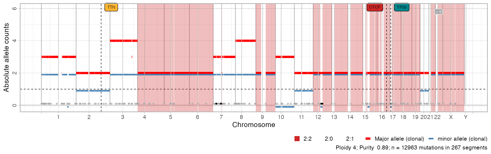
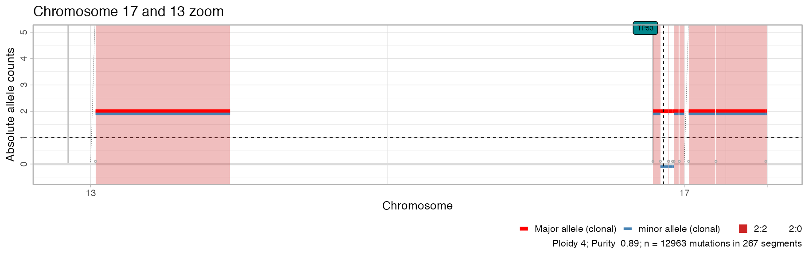
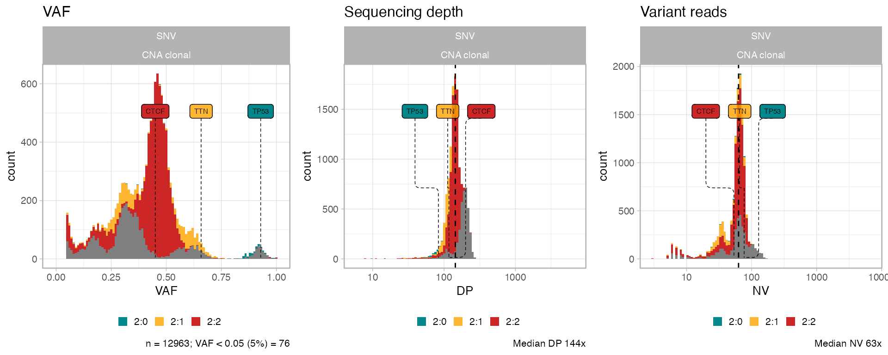
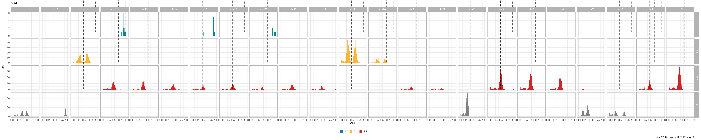
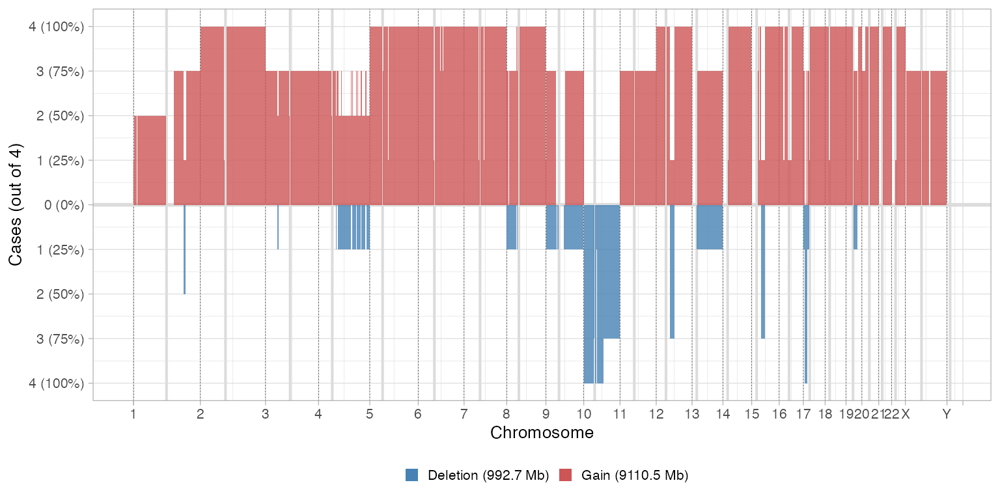
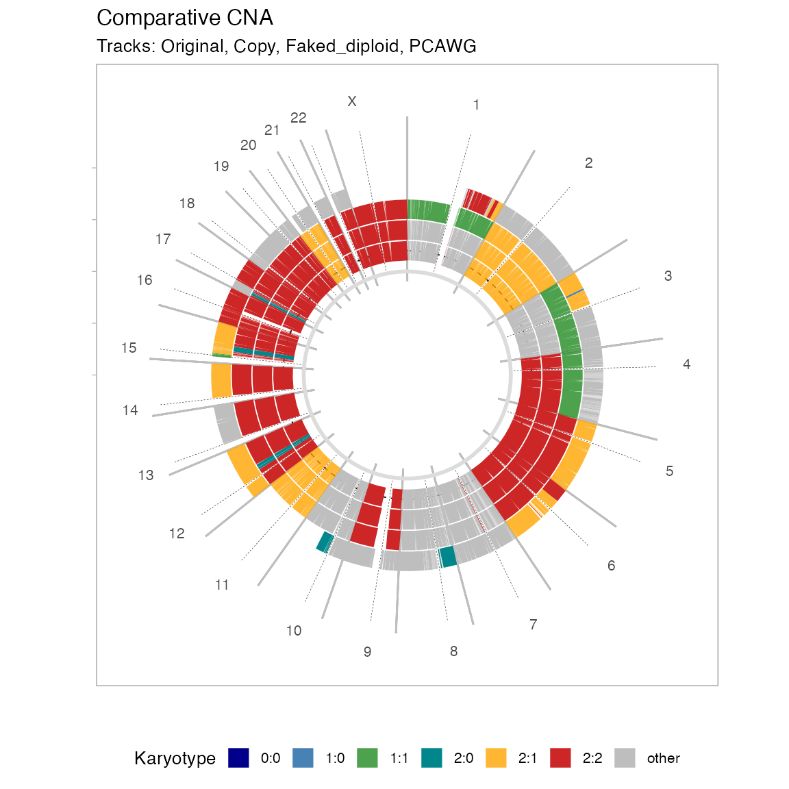

library(CNAqc)
#> ✔ Loading CNAqc, 'Copy Number Alteration quality check'. Support : <https://caravagn.github.io/CNAqc/>
require(dplyr)
#> Loading required package: dplyr
#>
#> Attaching package: 'dplyr'
#> The following objects are masked from 'package:stats':
#>
#> filter, lag
#> The following objects are masked from 'package:base':
#>
#> intersect, setdiff, setequal, unionAll CNAqc plotting functions use:
# Dataset available with the package
data('example_dataset_CNAqc', package = 'CNAqc')
x = CNAqc::init(
mutations = example_dataset_CNAqc$mutations,
cna = example_dataset_CNAqc$cna,
purity = example_dataset_CNAqc$purity,
ref = 'hg19')
#>
#> ── CNAqc - CNA Quality Check ───────────────────────────────────────────────────
#> ℹ Using reference genome coordinates for: hg19.
#> ℹ Drivers are annotated, but 'gene' column is missing, using mutation location.
#> ✔ Fortified calls for 12963 somatic mutations: 12963 SNVs (100%) and 0 indels.
#> ! CNAs have no CCF, assuming clonal CNAs (CCF = 1).
#> ✔ Fortified CNAs for 267 segments: 267 clonal and 0 subclonal.
#> ✔ 12963 mutations mapped to clonal CNAs.
print(x)
#> ── [ CNAqc ] 12963 mutations in 267 segments (267 clonal, 0 subclonal). Genome
#>
#> ── Clonal CNAs
#>
#> 2:2 [n = 7478, L = 1483 Mb] ■■■■■■■■■■■■■■■■■■■■■■■■■■■ { CTCF }
#> 4:2 [n = 1893, L = 331 Mb] ■■■■■■■
#> 3:2 [n = 1625, L = 357 Mb] ■■■■■■
#> 2:1 [n = 1563, L = 420 Mb] ■■■■■■ { TTN }
#> 3:0 [n = 312, L = 137 Mb] ■
#> 2:0 [n = 81, L = 39 Mb] { TP53 }
#> 16:2 [n = 4, L = 0 Mb]
#> 25:2 [n = 2, L = 1 Mb]
#> 3:1 [n = 2, L = 1 Mb]
#> 106:1 [n = 1, L = 0 Mb]
#> ℹ Sample Purity: 89% ~ Ploidy: 4.
#> ℹ There are 3 annotated driver(s) mapped to clonal CNAs.
#> chr from to ref alt DP NV VAF driver_label is_driver
#> chr2 179431633 179431634 C T 117 77 0.6581197 TTN TRUE
#> chr16 67646006 67646007 C T 120 54 0.4500000 CTCF TRUE
#> chr17 7577106 7577107 G C 84 78 0.9285714 TP53 TRUEPlotting copy number segments
Segments plots
CNAqc can plot genome-wide segments showing major and minor allele counts as red and blue bars. Bottom circles annotate breakpoints; by default this plot has limited y-axis and breakpoints for segments outside the plot (e.g. very high amplifications) are in black. Areas in the genome that are mapped to the most prevalent karyotype are shadowed by default.
# Default plot
plot_segments(x)
#> Scale for 'fill' is already present. Adding another scale for 'fill', which
#> will replace the existing scale.
Note: the colour scheme in CNAqc is fixed for certain segments. The colour scheme is adopted also for other information, e.g., to report the segment where a certain driver is mapped.
An alternative circular layout plot is available.
# Circular layout
plot_segments(x, circular = TRUE)
Customising segments plot
# Shadow other segments
plot_segments(x, highlight = c("2:1", "2:0", "2:2")) +
ggplot2::labs(title = "Annotate different karyotypes")
#> Scale for 'fill' is already present. Adding another scale for 'fill', which
#> will replace the existing scale.
# Subset the genome
plot_segments(x, chromosomes = 'chr17') + ggplot2::labs(title = "Chromosome 17 zoom")
#> Scale for 'fill' is already present. Adding another scale for 'fill', which
#> will replace the existing scale.
plot_segments(x, chromosomes = c('chr17', 'chr13')) + ggplot2::labs(title = "Chromosome 17 and 13 zoom")
#> Scale for 'fill' is already present. Adding another scale for 'fill', which
#> will replace the existing scale.
# Total copy number
plot_segments(x, cn = 'total') + ggplot2::labs(title = "Total copy number")
#> Scale for 'fill' is already present. Adding another scale for 'fill', which
#> will replace the existing scale.
Subclonal CNAs
We use the PCAWG object released with the package
CNAqc::example_PCAWG %>% print()
#> ── [ CNAqc ] 293736 mutations in 667 segments (654 clonal, 13 subclonal). Genom
#>
#> ── Clonal CNAs
#>
#> 2:1 [n = 88422, L = 692 Mb] ■■■■■■■■■■■■■■■■■■■■■■■■■■■
#> 3:2 [n = 58384, L = 417 Mb] ■■■■■■■■■■■■■■■■■■ { BRAF }
#> 3:1 [n = 48704, L = 380 Mb] ■■■■■■■■■■■■■■■
#> 3:0 [n = 26622, L = 360 Mb] ■■■■■■■■ { CDKN2A }
#> 2:2 [n = 25290, L = 253 Mb] ■■■■■■■■
#> 3:3 [n = 16790, L = 115 Mb] ■■■■■
#> 2:0 [n = 5374, L = 67 Mb] ■■
#> 4:0 [n = 1752, L = 22 Mb] ■ { TP53 }
#> 4:2 [n = 1441, L = 11 Mb]
#> 1:1 [n = 855, L = 9 Mb]
#>
#> ── Subclonal CNAs (showing up to 10 segments)
#>
#> chr11@55700000 [n = 10468, L = 78.75 Mb] 2:1 (0.21) 2:2 (0.79) ■■■■■■■■■■
#> chr11@17365005 [n = 5389, L = 31.55 Mb] 2:1 (0.21) 2:2 (0.79) ■■■■■
#> chr11@5372292 [n = 1014, L = 11.99 Mb] 2:1 (0.21) 2:2 (0.79)
#> chr11@202253 [n = 610, L = 5.17 Mb] 2:1 (0.22) 2:2 (0.78)
#> chr11@48918601 [n = 542, L = 2.68 Mb] 2:1 (0.25) 2:2 (0.75)
#> chr6@82432583 [n = 301, L = 1.81 Mb] 2:1 (0.19) 2:2 (0.81)
#> chr11@51600000 [n = 290, L = 4.1 Mb] 2:1 (0.26) 2:2 (0.74)
#> chr6@81896364 [n = 69, L = 0.54 Mb] 2:1 (0.19) 2:2 (0.81)
#> chr6@93956180 [n = 41, L = 0.11 Mb] 2:1 (0.2) 2:2 (0.8)
#> chr8@42633277 [n = 13, L = 0.26 Mb] 2:1 (0.28) 2:2 (0.72)
#> ℹ Sample Purity: 73.4% ~ Ploidy: 3.
#> ℹ There are 3 annotated driver(s) mapped to clonal CNAs.
#> chr from to ref alt DP NV VAF driver_label is_driver
#> chr17 7577082 7577082 C T 78 70 0.8974359 TP53 TRUE
#> chr7 140453136 140453136 A T 95 54 0.5684211 BRAF TRUE
#> chr9 21971120 21971120 G A 23 14 0.6086957 CDKN2A TRUE
#>
#> ── PASS Peaks QC closest: 100%, λ = -0.0104. Purity correction: -1%. ─────────
#> ℹ 1:1 ~ n = 855 (0.7%) → PASS -0.006
#> ℹ 2:0 ~ n = 5374 ( 4%) → PASS -0.003 PASS -0.002
#> ℹ 2:1 ~ n = 88422 ( 74%) → PASS -0.006 PASS -0.006
#> ℹ 2:2 ~ n = 25290 ( 21%) → PASS -0.053 PASS -0.004
#>
#> ── General peak QC (154052 mutations): PASS 21 FAIL 3 - epsilon = 0.03. ────
#> ℹ 3:0 ~ n = 26622 ( 17%) → PASS 3 FAIL 0
#> ℹ 3:1 ~ n = 48704 ( 32%) → PASS 3 FAIL 0
#> ℹ 3:2 ~ n = 58384 ( 38%) → PASS 3 FAIL 0
#> ℹ 3:3 ~ n = 16790 ( 11%) → PASS 3 FAIL 0
#> ℹ 4:0 ~ n = 1752 ( 1%) → PASS 3 FAIL 1
#> ℹ 4:2 ~ n = 1441 ( 1%) → PASS 3 FAIL 1
#> ℹ 4:3 ~ n = 359 ( 0%) → PASS 3 FAIL 1
#>
#> ── Subclonal peaks QC (7 segments, initial state 2:1): linear 3 branching 0 eith
#>
#> ── PASS Linear models
#> ℹ chr11@17365005 ~ (31.6Mb, n = 5389) 2:1 (21) + 2:2 (79) : A1A2B1 -> A1A2B1 -> A1A2B1B2 [100]
#> ℹ chr11@51600000 ~ (4.1Mb, n = 290) 2:1 (26) + 2:2 (74) : A1A2B1 -> A1A2B1 -> A1A2B1B2 [75]
#> ℹ chr11@5372292 ~ (12Mb, n = 1014) 2:1 (21) + 2:2 (79) : A1A2B1 -> A1A2B1 -> A1A2B1B2 [100]
#>
#> ── UNKNOWN Either branching or linear models
#> ℹ chr11@202253 ~ (5.2Mb, n = 610) 2:1 (22) + 2:2 (78) : A1A2B1 -> A1A2B1 -> A1A2B1B2 [100]; A1A2B1 -> A1A2B1 | A1A2B1B2 [100]; A1A2B1 -> A1A2B1B2 -> A2B1B2 [100]
#> ℹ chr11@48918601 ~ (2.7Mb, n = 542) 2:1 (25) + 2:2 (75) : A1A2B1 -> A1A2B1 -> A1A2B1B2 [100]; A1A2B1 -> A1A2B1 | A1A2B1B2 [100]; A1A2B1 -> A1A2B1B2 -> A2B1B2 [100]
#> ℹ chr11@55700000 ~ (78.8Mb, n = 10468) 2:1 (21) + 2:2 (79) : A1A2B1 -> A1A2B1 -> A1A2B1B2 [100]; A1A2B1 -> A1A2B1 | A1A2B1B2 [100]; A1A2B1 -> A1A2B1B2 -> A2B1B2 [100]
#> ℹ chr6@82432583 ~ (1.8Mb, n = 301) 2:1 (19) + 2:2 (81) : A1A2B1 -> A1A2B1 -> A1A2B1B2 [100]; A1A2B1 -> A1A2B1 | A1A2B1B2 [100]; A1A2B1 -> A1A2B1B2 -> A2B1B2 [100]
#> ✔ Cancer Cell Fraction (CCF) data available for karyotypes:1:0, 1:1, 2:0, 2:1, and 2:2.
#> ✔ PASS CCF via ENTROPY.
#> ✔ PASS CCF via ENTROPY.
#> ✔ PASS CCF via ENTROPY.
#> ✔ PASS CCF via ENTROPY.
#> ✔ PASS CCF via ENTROPY.Subclonal segments of each subclone have different colours compared to red/blue clonal segments.
plot_segments(CNAqc::example_PCAWG)
#> Scale for 'fill' is already present. Adding another scale for 'fill', which
#> will replace the existing scale.
Note: the CCF of each subclone is not reported in this plot.
Segments summaries
Based on parameter type, function
plot_karyotypes reports:
-
type = 'percentage', the proportion of genome covered by each segment (default); -
type = 'number', the counts of segments per karyotype.
ggpubr::ggarrange(
plot_karyotypes(x),
plot_karyotypes(x, type = 'number'),
common.legend = TRUE,
legend = 'bottom'
)
We can also plot the segments length distribution, which is used to detect fragmentation patterns.

Plotting mutations
Data histograms
Read counts information can be plot using
plot_data_histogram as histograms.
ggpubr::ggarrange(
plot_data_histogram(x, which = 'VAF'),
plot_data_histogram(x, which = 'DP'),
plot_data_histogram(x, which = 'NV'),
ncol = 3,
nrow = 1
)
#> Warning: Removed 8 rows containing missing values (geom_bar).
Note: if you compute CCFs you can use
plot_data_histogram(x, which = 'CCF')as well.
Segment-specific VAFs
VAFs per segment, split by chromosome, can help identify miscalled segments (i.e., for segments with the same major/minor allele copies the VAF distributions should be similar)
inspect_segment(x)
#> Warning: `guides(<scale> = FALSE)` is deprecated. Please use `guides(<scale> =
#> "none")` instead.
#> Warning: Removed 30 rows containing missing values (geom_bar).
# With facet from a data histogram
plot_data_histogram(x, which = 'VAF') +
ggplot2::facet_grid(karyotype~chr, scales = 'free')
#> Warning: Removed 56 rows containing missing values (geom_bar).
Genome-wide mutation data
Genome-wide plots that follow the layout of
plot_segments are avaiable to view the genome-wide
distributions of the number of mutations, their VAF and depth. VAF and
depth-plotting functions (scatterplots) can subset the input data to
speed up rendering and reduce the size of output files - by default
\(5000\) points are shown Counts plot,
instead, bin the genome locations by one megabase (\(10^6\) bases).
# All genome, all data - counts of mutations per megabase
plot_gw_counts(x)
# An example effect of downsampling the data
ggpubr::ggarrange(
plot_gw_depth(x, N = 1000),
plot_gw_depth(x),
plot_gw_depth(x, N = 10000),
ncol = 1
)
#> Warning: Removed 24 rows containing missing values (geom_segment).
#> Warning: Removed 24 rows containing missing values (geom_rect).
#> Warning: Removed 1 rows containing missing values (geom_hline).
#> Removed 1 rows containing missing values (geom_hline).
#> Warning: Removed 24 rows containing missing values (geom_segment).
#> Warning: Removed 24 rows containing missing values (geom_rect).
#> Warning: Removed 1 rows containing missing values (geom_hline).
#> Removed 1 rows containing missing values (geom_hline).
#> Warning: Removed 24 rows containing missing values (geom_segment).
#> Warning: Removed 24 rows containing missing values (geom_rect).
#> Warning: Removed 1 rows containing missing values (geom_hline).
#> Removed 1 rows containing missing values (geom_hline).
Combined plots
The default S3 plot function layouts a panel with
segments in bottom, and all other genome-wide plots on top. This
function aligns plots on the vertical axis, and stretch their relative
height to obtain a nice layout.
# The actual plot function
cowplot::plot_grid(
plot_gw_counts(x),
plot_gw_vaf(x, N = 10000),
plot_gw_depth(x, N = 10000),
plot_segments(x),
align = 'v',
nrow = 4,
rel_heights = c(.15, .15, .15, .8))
#> Scale for 'fill' is already present. Adding another scale for 'fill', which
#> will replace the existing scale.
#> Warning: Removed 24 rows containing missing values (geom_segment).
#> Warning: Removed 24 rows containing missing values (geom_rect).
#> Warning: Removed 1 rows containing missing values (geom_hline).
#> Removed 1 rows containing missing values (geom_hline).
Cohort plots
One can have multiple CNAqc objects - i.e., work with a cohort of objects - when working with
- a group of distinct patients;
- multiple samples from the same patient;
- multiple calls from the same sample;
Assuming all input objects have the same reference, cohort cohort-level plots are possible.
# Object 1
x = CNAqc::init(
mutations = example_dataset_CNAqc$mutations,
cna = example_dataset_CNAqc$cna,
purity = example_dataset_CNAqc$purity,
ref = 'hg19'
)
#>
#> ── CNAqc - CNA Quality Check ───────────────────────────────────────────────────
#> ℹ Using reference genome coordinates for: hg19.
#> ℹ Drivers are annotated, but 'gene' column is missing, using mutation location.
#> ✔ Fortified calls for 12963 somatic mutations: 12963 SNVs (100%) and 0 indels.
#> ! CNAs have no CCF, assuming clonal CNAs (CCF = 1).
#> ✔ Fortified CNAs for 267 segments: 267 clonal and 0 subclonal.
#> ✔ 12963 mutations mapped to clonal CNAs.
# Object 1 with some modifications
y = CNAqc::init(
mutations = example_dataset_CNAqc$mutations,
cna = example_dataset_CNAqc$cna %>%
mutate(
Major = ifelse(chr %in% c("chr3", "chr4", "chr1"), 1, Major),
minor = ifelse(chr %in% c("chr3", "chr4", "chr1"), 1, minor)
),
purity = example_dataset_CNAqc$purity,
ref = 'hg19')
#>
#> ── CNAqc - CNA Quality Check ───────────────────────────────────────────────────
#> ℹ Using reference genome coordinates for: hg19.
#> ℹ Drivers are annotated, but 'gene' column is missing, using mutation location.
#> ✔ Fortified calls for 12963 somatic mutations: 12963 SNVs (100%) and 0 indels.
#> ! CNAs have no CCF, assuming clonal CNAs (CCF = 1).
#> ✔ Fortified CNAs for 267 segments: 267 clonal and 0 subclonal.
#> ✔ 12963 mutations mapped to clonal CNAs.
# PCAWG sample
z = CNAqc::example_PCAWG
# Inputs need to be wrapped in a named list
inputs = list(`Original` = x, `Copy` = x, `Faked_diploid` = y, `PCAWG` = z)Copy number segments
The frequency of deletions and amplifications relative to diploid are shown by using a certain binning (step \(\delta\)) of the tumour genome. Here by deletion we define anything with 0 copies of the minor allele, and by amplification anything with \(\geq 3\) total copies (sum of the minor and major alleles).
# Comparative CNA plot - default delta
plot_multisample_CNA(inputs)
#>
#> ── Breaking input segments at 100 Kb resolution
#> Warning: replacing previous import 'cli::num_ansi_colors' by
#> 'crayon::num_ansi_colors' when loading 'easypar'
The binning \(\delta\) of the tumour genome can be changed to get larger/ shorter segments
# Comparative CNA plot - 10 Mb delta
plot_multisample_CNA(inputs, delta = 1e7)
#>
#> ── Breaking input segments at 10000 Kb resolutionA circular layout is also possible, with no binning or transformation of the data.
# Comparative CNA plot
plot_multisample_CNA(inputs, layout = 'circular')